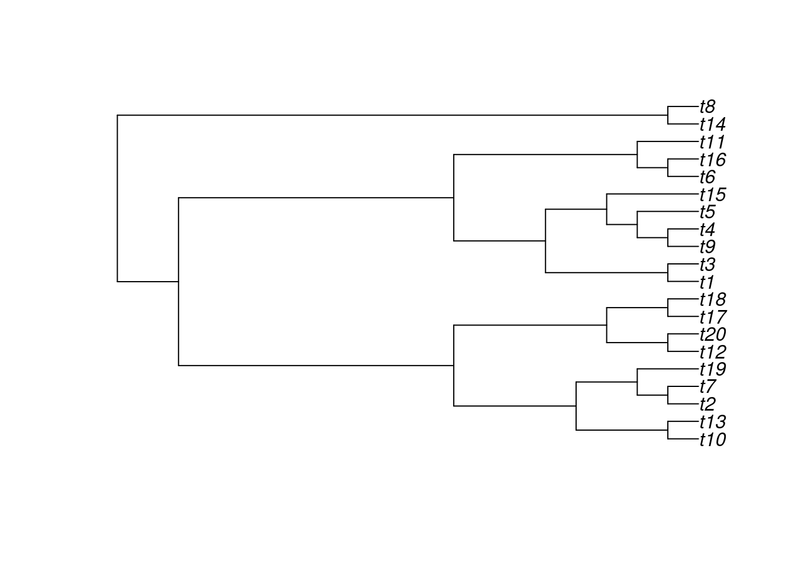
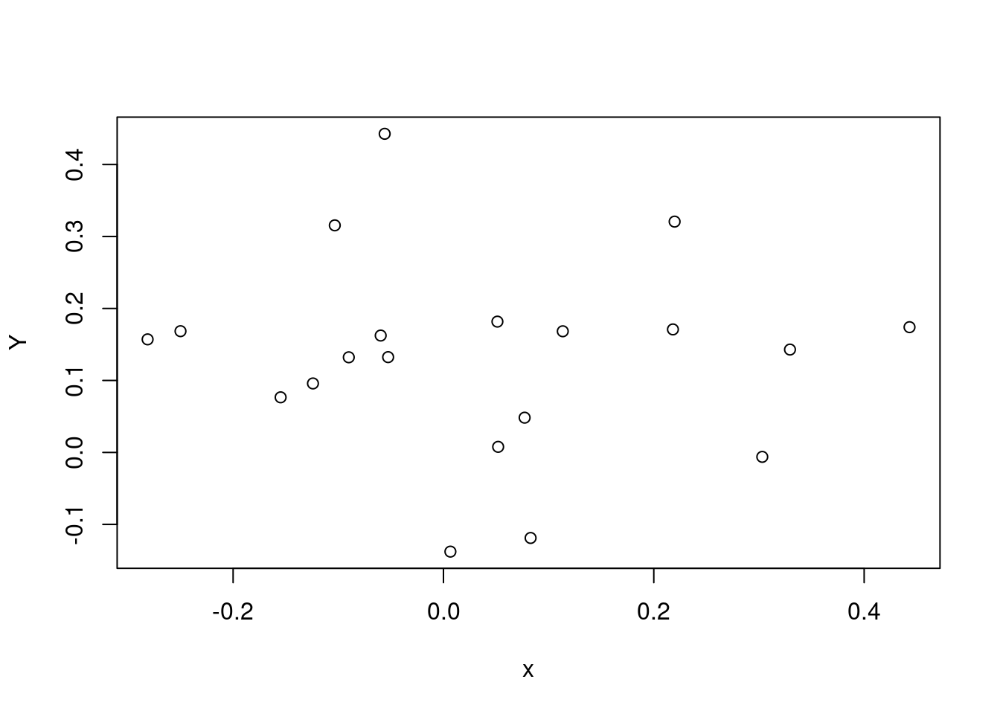
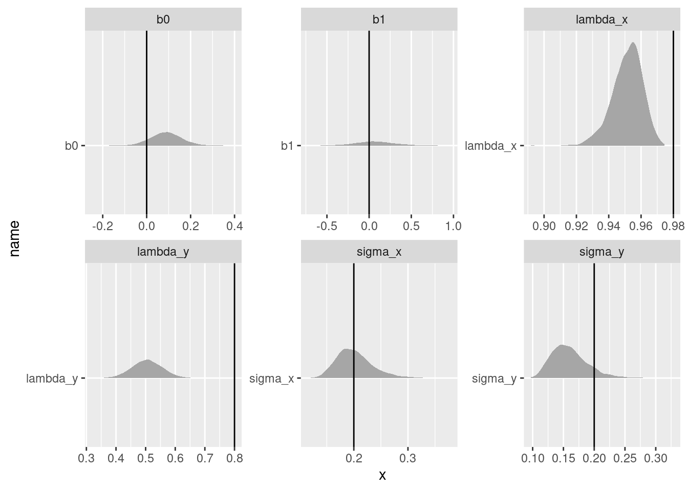
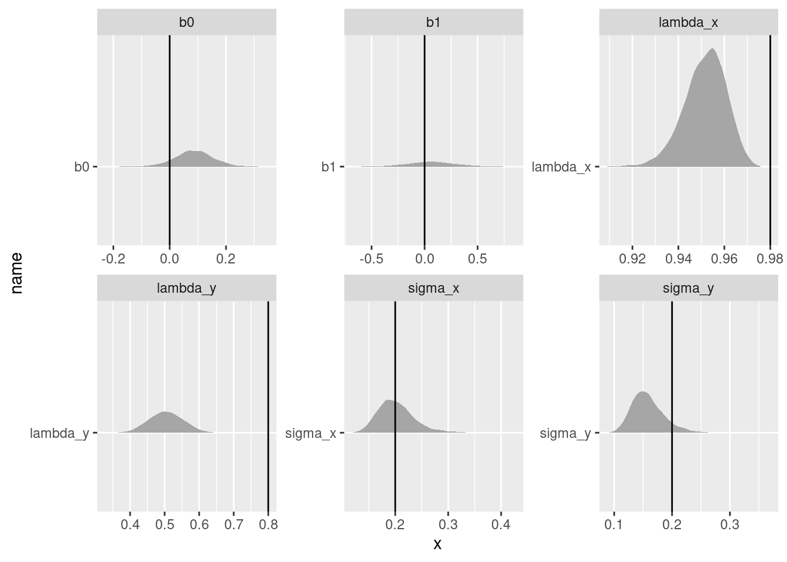
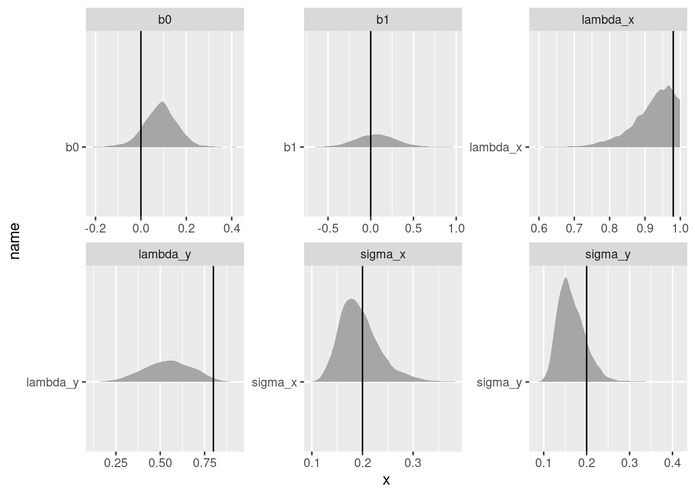
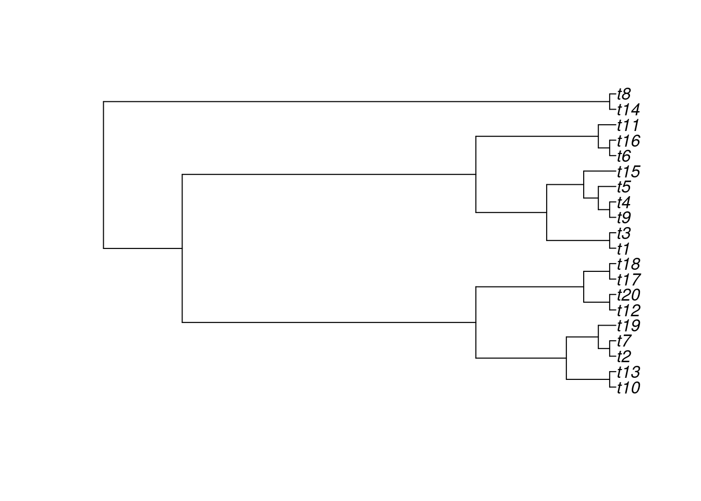
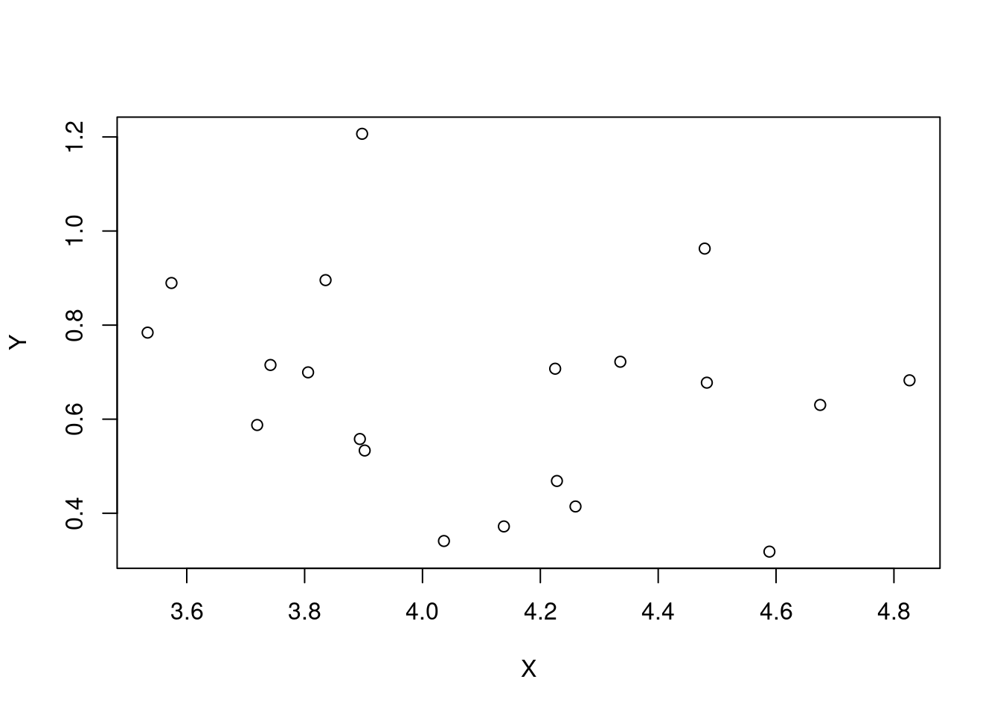
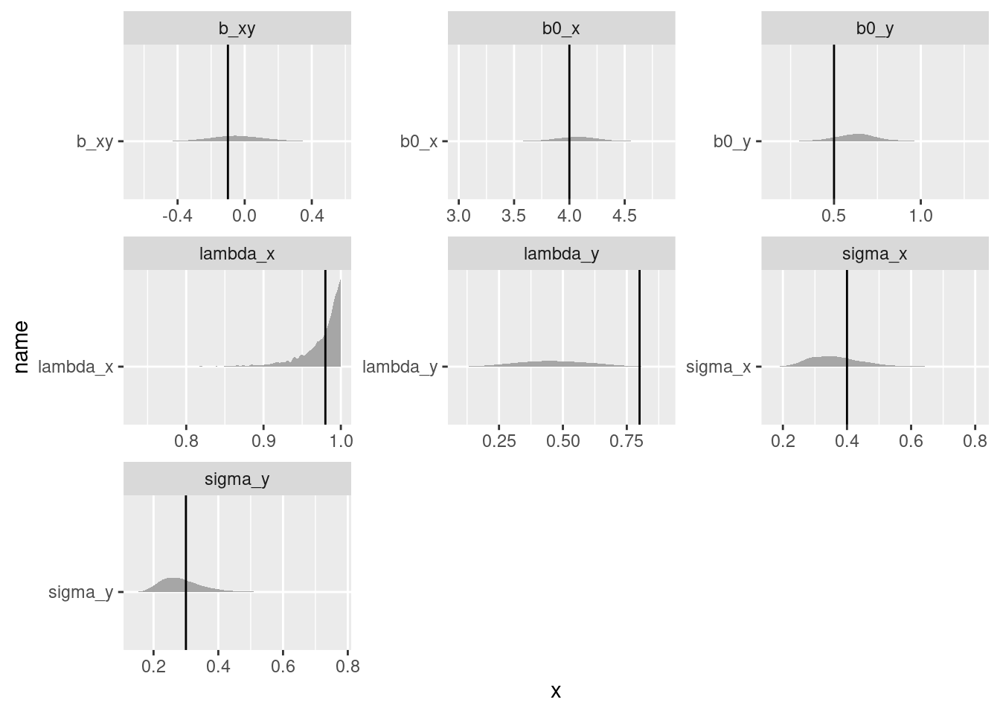

#
library(targets)
library(ggplot2)
library(tidyverse)
library(tidybayes)
library(rstan)
library(ape)
library(dplyr)
library(tidyr)
rstan_options("auto_write" = TRUE)
options(mc.cores = parallel::detectCores())Phylogeny
UdeS
stan
It is that (evolutionary) time.
NoteSome background and references
I’ve always wanted to learn more about phylogenetic regressions, and thanks to my colleague Alex Fuster, I recently had the opportunity to sit down and work on them. The literature on the topic is confusing, large, and not always clear about what model is being fit. I relied heavily on two resources:
Why a phylogenetic regression?
Suppose we have two traits, measured across many different species – say, social group size (Trait X) and brain size (Trait Y). Our objective is to test the biological hypothesis that larger social groups is associated to larger brain size. However there’s a catch: some of the species are closely related, while others are not (e.g. some species mammals and other are insects). Its entirely possible that any apparent correlation between social group size and brain size is a result of chance, that is both traits change randomly along evolutionary time. That means that distantly related species have more time to become different to each other, and close relatives have less “time apart” and are therefore less likely to be different in their two traits.
Because every kind of cross-species comparison involves a group of species with a phylogenetic structure, “controlling for phylogeny” has become very common in these kinds of studies. Also, because we are usually missing traits for at least some species in our studies, people often use phylogeny as a guide for guessing what trait values are present in the animals that we have not measured.
Recipe for phylogeny
I love the large and flexible toolbox of Bayesian methods because it can be adapted to fit such a huge array of models – virtually all the models that ecologists want to fit! However, there’s a catch: to fit a model using Stan you have to know exactly what model you’re fitting. However, because these regressions are usually fit using custom software, it can be a challenge to dig to find the exact equations being fit!
Using the two resources mentioned above, I was able to write down (I hope!) the equation for the model like this:
\[ \begin{align} y_i &= \bar{y} + \beta_1 x_i + a_{s[i]} \\ a_{s} &\sim \text{MVNormal}(0, \Sigma_a)\\ \Sigma_a &= \begin{bmatrix} \sigma_a^2 & \lambda_a \cdot \sigma_{12} & \cdots & \lambda_a \cdot \sigma_{1,s} \\ \lambda_a \cdot \sigma_{21} & \sigma_a^2 & \cdots & \lambda_a \cdot \sigma_{2,s} \\ \vdots & \vdots & \ddots & \vdots \\ \lambda_a \cdot \sigma_{s,1} & \lambda_a \cdot \sigma_{s,2} & \cdots & \sigma_a^2 \end{bmatrix} \\ x_i &= \bar{x} + b_{s[i]} \\ b_{s} &\sim \text{MVNormal}(0, \Sigma_b)\\ \Sigma_b &= \begin{bmatrix} \sigma_b^2 & \lambda_b \cdot \sigma_{12} & \cdots & \lambda_b \cdot \sigma_{1,s} \\ \lambda_b \cdot \sigma_{21} & \sigma_b^2 & \cdots & \lambda_b \cdot \sigma_{2,s} \\ \vdots & \vdots & \ddots & \vdots \\ \lambda_b \cdot \sigma_{s,1} & \lambda_b \cdot \sigma_{s,2} & \cdots & \sigma_b^2 \end{bmatrix} \end{align} \tag{1}\]
Note
You can see that there is no likelihood for the \(y_i\) and \(x_i\) values. That’s because I’m starting from a simplistic case where we know the true values for each species. The only thing to estimate is how variable these traits are among species, and how much of that variation correlates with phylogeny. Later I’ll show an example that is closer to reality.
You can see that there are two big variance-covariance matrices here, for the effects of phylogeny on \(y\) and \(x\). Note that in phylogeny analyses, it is common for trees to be converted to square matrices. These covariance matrices have three ingredients that are all put together:
- The base How far apart are species on the phylogeny? Many ecologists work with trees where all the tips end at the present day – so all species have the same amount of time going back to their last common ancestor. For trees like this, when converted to a matrix, the diagonal of the matrix is 1 (i.e., 100% of the evolutionary time), while the off-diagonals are the proportion of this total time which is shared between species.
- The flavour This is a model of species averages. If there were no effect of phylogeny at all, we would still expect species to be a little different. But how different are species from each other? These differences are controlled by a standard deviation, \(\sigma\), with which we multiply the whole matrix to scale it.
- The secret sauce The off-diagonal elements of \(\Sigma\) are multiplied by another number between 0 and 1: this is “Pagel’s Lambda”. It acts like a tuning knob, adjusting the amount of phylogenetic flavour that makes it into the model. When \(\lambda\) is 1, we have the maximum amount of covariance coming from the phylogeny. When \(\lambda\) is 0, we are back to an identity matrix and the species are considered independent.
There’s another way to write this equation that makes these three parts clearer to see. First we have to make \(V_{phy}\), which is the phylogenetic variance-covariance matrix. This has variances and covariances for each species on our tree. For example, for 3 species the phylogenetic variance-covariance matrix is:
\[ V_{phy} = \begin{bmatrix} \sigma_1^2 & \sigma_{12} & \sigma_{1,3} \\ \sigma_{2,1} & \sigma_2^2 & \sigma_{2,3} \\ \sigma_{3,1} & \sigma_{3,2} & \sigma_3^2 \end{bmatrix} \] The covariances are equal to the proportion of the tree that is shared between two species. The diagonal is the amount of time between the tree’s root and each species. This means that, for a tree where all the tips end at the present day, the diagonal must be 1 and the off-diagonal elements range between 0 and 1.
Then, we can write the expression for \(\Sigma\) like this:
\[ \Sigma = \sigma^2 \lambda V_{phy} + \sigma^2 (1 - \lambda) \mathbf{I} \] This is equation 4 in Pearse et al. (2025).
I can rewrite Equation 1 in this style:
\[ \begin{align} y_i &= \bar{y} + \beta_1 x_i + a_{s[i]} \\ a_{s} &\sim \text{MVNormal}(0, \Sigma_a)\\ \Sigma_a &= \sigma_a^2 \lambda_a V_{phy} + \sigma_a^2 (1 - \lambda_a) \mathbf{I} \\ x_i &= \bar{x} + b_{s[i]} \\ b_{s} &\sim \text{MVNormal}(0, \Sigma_b)\\ \Sigma_b &= \sigma_b^2 \lambda_b V_{phy} + \sigma_b^2 (1 - \lambda_b) \mathbf{I} \\ \end{align} \tag{2}\]
You can see I’m using two different trait variances (\(\sigma_a\) and \(\sigma_b\)) and two different amounts of phylogenetic signal (\(\lambda_a\) and \(\lambda_b\)), one for each trait.
Data simulation
Here is simulation code from Ives (2018), which generates a dataset where there is a signal for phylogeny and also a relationship between two traits of interest. I will use this code to generate a dataset and then estimate the known parameters with a Stan model:
## simulate data
set.seed(42)
n <- 20
b0 <- 0
b1 <- 0
lambda_x <- .98
lambda_y <- .8
sigma_y <- .2
sigma_x <- .2
phy <- ape::compute.brlen(ape::rtree(n=n),
method = "Grafen",
power = 1)
plot(phy)
phy.x <- phylolm::transf.branch.lengths(phy=phy,
model="lambda",
parameters=list(lambda = lambda_x))$tree
phy.e <- phylolm::transf.branch.lengths(phy=phy,
model="lambda",
parameters=list(lambda = lambda_y))$tree
x <- ape::rTraitCont(phy.x,
model = "BM",
sigma = sigma_x)
e <- ape::rTraitCont(phy.e,
model = "BM",
sigma = sigma_y)
x <- x[match(names(e), names(x))]
Y <- b0 + b1 * x + e
Y <- array(Y)
rownames(Y) <- phy$tip.label
plot(x, Y)

Here’s a Stan program which fits the model in Equation 2 to these simulated data.
phylo <- stan_model("topics/04-phylo/phylo.stan")
phyloS4 class stanmodel 'anon_model' coded as follows:
data {
int n;
int s;
vector[n] x;
vector[n] y;
matrix[s, s] phyvcv;
}
parameters {
real b0;
real b1;
real sigma_x;
real sigma_y;
real logit_lambda_x;
real logit_lambda_y;
}
transformed parameters {
real<lower=0,upper=1> lambda_x;
lambda_x = inv_logit(logit_lambda_x);
// y
real<lower=0,upper=1> lambda_y;
lambda_y = inv_logit(logit_lambda_y);
}
model {
b0 ~ std_normal();
b1 ~ normal(.5, .5);
sigma_x ~ exponential(1);
sigma_y ~ exponential(1);
logit_lambda_x ~ normal(3, .2);
logit_lambda_y ~ normal(0, .2);
matrix[s, s] vcv_x;
vcv_x = add_diag(sigma_x^2*lambda_x*phyvcv, sigma_x^2*(1 - lambda_x));
matrix[s, s] vcv_y;
vcv_y = add_diag(sigma_y^2*lambda_y*phyvcv, sigma_y^2*(1 - lambda_y));
x ~ multi_normal(rep_vector(0, n), vcv_x);
y ~ multi_normal(b0 + b1*x, vcv_y);
} Now we’ll sample the model and plot the posterior distribution of some parameters against the truth:
phylo_sample <- sampling(phylo,data = list(n = n,
s = n,
x = x,
y = Y,
phyvcv = ape::vcv(phy)),
chains = 4,
refresh = 1000)make_rvar_df <- function(post_draws){
# assume post_draws is already a matrix or data.frame
df <- as.data.frame(post_draws)
# ensure columns are not matrices/arrays
df <- lapply(df, function(x) {
if (is.matrix(x) || is.array(x)) as.vector(x) else x
})
as.data.frame(df, optional = TRUE)
}
plot_true_post <- function(truth_df, post_draws_df){
true_post_df <- merge(truth_df, post_draws_df, by = "name", all.x = TRUE)
params <- unique(true_post_df$name)
n <- length(params)
# layout similar to facet_wrap
ncol <- ceiling(sqrt(n))
nrow <- ceiling(n / ncol)
old_par <- par(mfrow = c(nrow, ncol))
for (p in params) {
sub <- true_post_df[true_post_df$name == p, ]
post <- unlist(sub$posterior)
dens <- density(post)
plot(dens, main = p, xlab = "", ylab = "Density")
abline(v = sub$value[1], col = "red", lty = 2, lwd = 2)
}
par(old_par)
}
# ----- truth (pivot_longer equivalent) -----
truth_wide <- data.frame(sigma_x, sigma_y, b0, b1, lambda_x, lambda_y)
truth <- data.frame(
name = names(truth_wide),
value = as.vector(as.matrix(truth_wide))
)
# ----- posterior processing -----
posterior_df <- make_rvar_df(phylo_sample)
# select columns b0:lambda_y
start <- which(names(posterior_df) == "b0")
end <- which(names(posterior_df) == "lambda_y")
posterior_subset <- posterior_df[, start:end, drop = FALSE]
# reshape to long format
posterior_dist_long <- data.frame(
name = rep(names(posterior_subset), each = nrow(posterior_subset)),
posterior = unlist(posterior_subset, use.names = FALSE)
)
plot_true_post(truth, posterior_dist_long)
We can see that, at least for these values, parameter recovery isn’t bad, especially for the coefficients \(\beta_0\) and \(\beta_1\). However, at least in this simulation, the parameters describing the phylogenetic signal are all underestimated.
Tips from the forum
Andrew posted about this model in the Stan Discourse forum and had the good luck to get feedback from Bob Carpenter (one of the core Stan developers)! Here is the model after including those suggested changes:
phylo_forum <- stan_model("topics/04-phylo/phylo_forum.stan")
phylo_forumS4 class stanmodel 'anon_model' coded as follows:
data {
int<lower=0> n;
int<lower=0> s;
vector[n] x;
vector[n] y;
cov_matrix[s] phyvcv;
}
transformed data {
vector[n] zero_vec = rep_vector(0, n);
}
parameters {
real b0;
real<offset=0.5, multiplier=0.5> b1;
real<lower=0> sigma_x;
real<lower=0> sigma_y;
real<offset=3, multiplier=0.2> logit_lambda_x;
real<multiplier=0.2> logit_lambda_y;
}
transformed parameters {
real<lower=0, upper=1> lambda_x = inv_logit(logit_lambda_x);
real<lower=0, upper=1> lambda_y = inv_logit(logit_lambda_y);
}
model {
b0 ~ std_normal();
b1 ~ normal(0.5, 0.5);
sigma_x ~ exponential(1);
sigma_y ~ exponential(1);
logit_lambda_x ~ normal(3, .2);
logit_lambda_y ~ normal(0, .2);
matrix[s, s] vcv_x
= sigma_x^2 * add_diag(lambda_x * phyvcv, 1 - lambda_x);
matrix[s, s] vcv_y
= sigma_y^2 * add_diag(lambda_y * phyvcv, 1 - lambda_y);
x ~ multi_normal(zero_vec, vcv_x);
y ~ multi_normal(b0 + b1 * x, vcv_y);
} phylo_forum_sample <- sampling(phylo_forum,
data = list(n = n,
s = n,
x = x,
y = Y,
phyvcv = ape::vcv(phy)),
chains = 4,
refresh = 1000)
# ----- truth (pivot_longer equivalent) -----
truth_wide <- data.frame(sigma_x, sigma_y, b0, b1, lambda_x, lambda_y)
truth <- data.frame(
name = names(truth_wide),
value = as.vector(as.matrix(truth_wide))
)
# ----- posterior processing -----
posterior_df <- make_rvar_df(phylo_forum_sample)
# select columns b0:lambda_y
start <- which(names(posterior_df) == "b0")
end <- which(names(posterior_df) == "lambda_y")
posterior_subset <- posterior_df[, start:end, drop = FALSE]
# pivot_longer equivalent
phylo_forum_sample_long <- data.frame(
name = rep(names(posterior_subset), each = nrow(posterior_subset)),
posterior = unlist(posterior_subset, use.names = FALSE)
)
# ----- plotting -----
plot_true_post(truth, post_draws_df = phylo_forum_sample_long)
We get get pretty similar results to the above!
and an even simpler strategy, replacing the lambda parameter on the logit scale with a beta:
phylo_beta <- stan_model("topics/04-phylo/phylo_beta.stan")
phylo_betaS4 class stanmodel 'anon_model' coded as follows:
data {
int<lower=0> n;
int<lower=0> s;
vector[n] x;
vector[n] y;
cov_matrix[s] phyvcv;
}
transformed data {
vector[n] zero_vec = rep_vector(0, n);
}
parameters {
real b0;
real<offset=0.5, multiplier=0.5> b1;
real<lower=0> sigma_x;
real<lower=0> sigma_y;
real<lower=0,upper=1> lambda_x;
real<lower=0,upper=1> lambda_y;
}
model {
b0 ~ std_normal();
b1 ~ normal(0.5, 0.5);
sigma_x ~ exponential(1);
sigma_y ~ exponential(1);
lambda_x ~ beta(9, 1);
lambda_y ~ beta(5, 5);
matrix[s, s] vcv_x
= sigma_x^2 * add_diag(lambda_x * phyvcv, 1 - lambda_x);
matrix[s, s] vcv_y
= sigma_y^2 * add_diag(lambda_y * phyvcv, 1 - lambda_y);
x ~ multi_normal(zero_vec, vcv_x);
y ~ multi_normal(b0 + b1 * x, vcv_y);
} phylo_beta_sample <- sampling(phylo_beta,
data = list(n = n,
s = n,
x = x,
y = Y,
phyvcv = ape::vcv(phy)),
chains = 4, refresh = 1000)
phylo_beta_sample# ----- posterior processing -----
posterior_df <- make_rvar_df(phylo_beta_sample)
# select columns b0:lambda_y
start <- which(names(posterior_df) == "b0")
end <- which(names(posterior_df) == "lambda_y")
posterior_subset <- posterior_df[, start:end, drop = FALSE]
# pivot_longer equivalent
phylo_beta_sample_long <- data.frame(
name = rep(names(posterior_subset), each = nrow(posterior_subset)),
posterior = unlist(posterior_subset, use.names = FALSE)
)
# ----- plotting -----
plot_true_post(truth, post_draws_df = phylo_beta_sample_long)
Repeated sampling of these traits
The simulation above is giving species means. However, in our study we have more than one measurement per species. Measurements of “Trait X” and “Trait Y” are measured on different individuals. In fact, they are coming from two completely different datasets! Of course, in the real-world application there will be all kinds of quirky differences between the two datasets: different amounts of effort per species and different species measured in each dataset.
set.seed(42)
# set true parameter values
n <- 20
b0_x <- 4
b0_y <- .5
b_xy <- -.1
lam.x <- .98
lam.e <- .5
sigma_x <- .4
sigma_y <- .3
# simulate phylogeny
phy <- ape::compute.brlen(ape::rtree(n=n),
method = "Grafen",
power = 1.5)
plot(phy)
# get names from this matrix! needs to line up perfectly
phyvcv <- ape::vcv(phy)
distmat_names <- dimnames(phyvcv)[[1]]
# observations per species
n_obs <- 15
phy.x <- phylolm::transf.branch.lengths(phy=phy,
model="lambda",
parameters=list(lambda = lam.x))$tree
phy.e <- phylolm::transf.branch.lengths(phy=phy,
model="lambda",
parameters=list(lambda = lam.e))$tree
x <- ape::rTraitCont(phy.x, model = "BM", sigma = sigma_x)
e <- ape::rTraitCont(phy.e, model = "BM", sigma = sigma_y)
x <- x[match(names(e), names(x))]
## calculate Y
Y <- b0_y + b_xy * x + e
## calculate X
X <- b0_x + x
# Y <- array(Y)
names(Y) <- phy$tip.label
plot(X, Y)
# ----- create obs_xy_df -----
obs_xy_df <- data.frame(X = X,
Y = Y,
sp_name = names(x),
stringsAsFactors = FALSE)
# create sp_id using factor levels
obs_xy_df$sp_id <- as.numeric(factor(obs_xy_df$sp_name,
levels = distmat_names))
# generate list-columns manually
obs_xy_df$obs_x <- lapply(obs_xy_df$X,
function(mu) {
rnorm(n_obs, mean = mu, sd = 0.3)
})
obs_xy_df$obs_y <- lapply(obs_xy_df$Y,
function(mu) {
rnorm(n_obs, mean = mu, sd = 0.3)
})
# ----- unnest obs_x -----
x_obs_df <- data.frame(sp_id = rep(obs_xy_df$sp_id,
times = sapply(obs_xy_df$obs_x,
length)),
obs_x = unlist(obs_xy_df$obs_x,
use.names = FALSE))
# ----- unnest obs_y -----
y_obs_df <- data.frame(sp_id = rep(obs_xy_df$sp_id,
times = sapply(obs_xy_df$obs_y,
length)),
obs_y = unlist(obs_xy_df$obs_y, use.names = FALSE))Fit a model that is ready for replication per species:
phylo_obs_cen <- stan_model("topics/04-phylo/phylo_obs_cen.stan")
phylo_obs_cenS4 class stanmodel 'anon_model' coded as follows:
data {
int<lower=0> s;
// x trait
int<lower=0> n_x;
vector[n_x] x_obs;
array[n_x] int<lower=1,upper=s> sp_id_x;
// y trait
int<lower=0> n_y;
vector[n_y] y_obs;
array[n_y] int<lower=1,upper=s> sp_id_y;
cov_matrix[s] phyvcv;
}
transformed data {
vector[s] zero_vec = rep_vector(0, s);
}
parameters {
real<offset=2,multiplier=2> b0_x;
real<offset=.5,multiplier=.8> b0_y;
real<offset=0.5, multiplier=0.5> b_xy;
real<lower=0> sigma_x;
real<lower=0> sigma_y;
real<lower=0, upper=1> lambda_x;
real<lower=0, upper=1> lambda_y;
vector[s] x_avg;
vector[s] y_avg;
real<lower=0> sigma_x_obs;
real<lower=0> sigma_y_obs;
}
model {
b0_x ~ normal(2, 2);
b0_y ~ normal(.5, .8);
b_xy ~ normal(0, .2);
sigma_x ~ exponential(1);
sigma_y ~ exponential(1);
lambda_x ~ beta(9, 1);
lambda_y ~ beta(5, 5);
matrix[s, s] vcv_x
= sigma_x^2 * add_diag(lambda_x * phyvcv, 1 - lambda_x);
matrix[s, s] vcv_y
= sigma_y^2 * add_diag(lambda_y * phyvcv, 1 - lambda_y);
sigma_x_obs ~ exponential(1);
sigma_y_obs ~ exponential(1);
// species averages
x_avg ~ multi_normal(zero_vec, vcv_x);
y_avg ~ multi_normal(b_xy * x_avg, vcv_y);
// observations of these
x_obs ~ normal(b0_x + x_avg[sp_id_x], sigma_x_obs);
y_obs ~ normal(b0_y + y_avg[sp_id_y], sigma_y_obs);
} Sampling the model – this produces some warnings that are safe to ignore at this point.
phylo_obs_cen_samp <- sampling(phylo_obs_cen,
data = list(s = n,
# trait x
n_x = nrow(x_obs_df),
x_obs = x_obs_df$obs_x,
sp_id_x = x_obs_df$sp_id,
# trait y
n_y = nrow(y_obs_df),
y_obs = y_obs_df$obs_y,
sp_id_y = y_obs_df$sp_id,
# phylogeny
phyvcv = phyvcv),
chains = 4,
refresh = 1000)
knitr::kable(summary(phylo_obs_cen_samp, pars = c("b0_x",
"b0_y",
"b_xy",
"sigma_x",
"sigma_y",
"lambda_x",
"lambda_y",
"sigma_x_obs",
"sigma_y_obs"
))$summary)| mean | se_mean | sd | 2.5% | 25% | 50% | 75% | 97.5% | n_eff | Rhat | |
|---|---|---|---|---|---|---|---|---|---|---|
| b0_x | 4.0743605 | 0.0119175 | 0.2034081 | 3.6642441 | 3.9471957 | 4.0736774 | 4.2031110 | 4.4768585 | 291.3181 | 1.0043431 |
| b0_y | 0.4337311 | 0.0070445 | 0.1285565 | 0.1601965 | 0.3567724 | 0.4377441 | 0.5149513 | 0.6763421 | 333.0360 | 1.0182377 |
| b_xy | 0.0318639 | 0.0038650 | 0.1734806 | -0.3090723 | -0.0839857 | 0.0314868 | 0.1493511 | 0.3740281 | 2014.6969 | 0.9995147 |
| sigma_x | 0.3461016 | 0.0025171 | 0.0944096 | 0.2023538 | 0.2805912 | 0.3331004 | 0.3976993 | 0.5757480 | 1406.7453 | 1.0015928 |
| sigma_y | 0.2886592 | 0.0015497 | 0.0641706 | 0.1897961 | 0.2434776 | 0.2792976 | 0.3229529 | 0.4398490 | 1714.6919 | 1.0029161 |
| lambda_x | 0.9215109 | 0.0015183 | 0.0665869 | 0.7491182 | 0.8918968 | 0.9397683 | 0.9699105 | 0.9959951 | 1923.2920 | 1.0004604 |
| lambda_y | 0.4775243 | 0.0029204 | 0.1416453 | 0.2065620 | 0.3775318 | 0.4767226 | 0.5758509 | 0.7547554 | 2352.4624 | 1.0014143 |
| sigma_x_obs | 0.2844852 | 0.0002452 | 0.0124285 | 0.2613678 | 0.2759932 | 0.2840757 | 0.2924185 | 0.3103437 | 2568.9757 | 1.0012868 |
| sigma_y_obs | 0.3068323 | 0.0002533 | 0.0130139 | 0.2819648 | 0.2979376 | 0.3065049 | 0.3154338 | 0.3330654 | 2639.7340 | 1.0005784 |
# ----- truth_df (tribble equivalent) -----
truth_df <- data.frame(name = c("b0_x",
"b0_y",
"b_xy",
"sigma_x",
"sigma_y",
"lambda_x",
"lambda_y"),
value = c(b0_x,
b0_y,
b_xy,
sigma_x,
sigma_y,
lambda_x,
lambda_y),
stringsAsFactors = FALSE)
# ----- posterior processing -----
posterior_df <- make_rvar_df(phylo_obs_cen_samp)
# remove columns x_avg and y_avg
posterior_subset <- posterior_df[, !(names(posterior_df) %in% c("x_avg",
"y_avg")),
drop = FALSE]
# pivot_longer equivalent
phylo_obs_cen_samp_long <- data.frame(name = rep(names(posterior_subset),
each = nrow(posterior_subset)),
posterior = unlist(posterior_subset,
use.names = FALSE))
# ----- plotting -----
plot_true_post(truth_df = truth_df,
post_draws_df = phylo_obs_cen_samp_long)
Species averages
# ----- extract "b0_x" column (pluck equivalent) -----
rvar_list <- posterior::as_draws_rvars(phylo_obs_cen_samp)$b0_x
# ----- build x_avg_post_long -----
posterior_df <- make_rvar_df(phylo_obs_cen_samp)
# select x_avg column
x_avg_col <- posterior_df[, grep(pattern = "x_avg", colnames(posterior_df))]
# unnest x_avg (assumed list-column or vector per row)
x_avg_values <- unlist(x_avg_col, use.names = FALSE)
# create sp_id (rownames_to_column + parse_number equivalent)
sp_id <- rep(seq_len(nrow(x_avg_col)), times = ncol(x_avg_col))
# compute x_total_avg
x_total_avg <- rvar_list[sp_id] + x_avg_values
x_avg_post_long <- data.frame(sp_id = sp_id,
x_avg = x_avg_values,
x_total_avg = x_total_avg)
# ----- merge with obs_xy_df -----
merged_df <- merge(obs_xy_df,
x_avg_post_long,
by = "sp_id",
all.x = TRUE)
# ----- base R plotting (approximation of slab + points) -----
sp_names <- unique(merged_df$sp_name)
n <- length(sp_names)
ncol <- ceiling(sqrt(n))
nrow <- ceiling(n / ncol)
old_par <- par(mfrow = c(nrow, ncol))
for (sp in sp_names) {
sub <- merged_df[merged_df$sp_name == sp, ]
dens <- density(sub$x_avg)
plot(dens, main = sp, xlab = "", ylab = "Density")
# observed point (mean X per species)
points(x = sub$X[1], y = 0, col = "red", pch = 16)
}
rvar_list <- phylo_obs_cen_samp |> posterior::as_draws_rvars() |>
pluck("b0_x")
x_avg_post_long <- make_rvar_df(phylo_obs_cen_samp) |>
# calculate averages
select(x_avg) |>
unnest(x_avg) |>
rownames_to_column(var = "sp_id") |>
mutate(sp_id = readr::parse_number(sp_id),
x_total_avg = rvar_list + x_avg )
obs_xy_df |>
left_join(x_avg_post_long) |>
ggplot(aes(x = sp_name, dist = x_total_avg))+
tidybayes::stat_dist_slab() +
geom_point(aes(x = sp_name, y = X))Missing data
Many people use phylogenetic information to help when a dataset is missing a lot of traits.
Here I’m using the same model as above but imagining that a few species are never measured for trait X, but are measured for trait y. There’s also phylogenetic information on both traits.
Notice that there’s no need to rewrite the model for this! all I need to do is take out some observations from the dataset:
# remove some from the output
absent_sp <- sample(x_obs_df$sp_id |> unique(), size = 7, replace = FALSE)
x_obs_NA_df <- x_obs_df |>
filter(!(sp_id %in% absent_sp))
phylo_obs_NA_samp <- sampling(
phylo_obs_cen,
data = list(
s = n,
# trait x
n_x = nrow(x_obs_NA_df),
x_obs = x_obs_NA_df$obs_x,
sp_id_x = x_obs_NA_df$sp_id,
# trait y
n_y = nrow(y_obs_df),
y_obs = y_obs_df$obs_y,
sp_id_y = y_obs_df$sp_id,
# phylogeny
phyvcv = phyvcv
), chains = 4, refresh = 0)
rvar_list <- phylo_obs_NA_samp |>
posterior::as_draws_rvars() |>
pluck("b0_x")
x_avg_post_long <- make_rvar_df(phylo_obs_NA_samp) |>
# calculate averages
select(x_avg) |>
unnest(x_avg) |>
rownames_to_column(var = "sp_id") |>
mutate(sp_id = readr::parse_number(sp_id),
x_total_avg = rvar_list + x_avg )
obs_xy_df |>
left_join(x_avg_post_long) |>
mutate(absent = sp_id %in% absent_sp) |>
ggplot(aes(x = sp_name, dist = x_total_avg))+
tidybayes::stat_dist_slab() +
geom_point(aes(x = sp_name, y = X, col = absent))
## scalar parameters
phylo_obs_NA_samp_long <- make_rvar_df(phylo_obs_NA_samp) |>
select(-x_avg, -y_avg) |>
pivot_longer(cols = everything(), values_to = "posterior")
plot_true_post(truth_df = truth_df,
post_draws_df = phylo_obs_NA_samp_long)The model estimates latent parameters for species averages, which are then measured with error. This makes it easy to model unmeasured values. In Bayesian inference, unmeasured quantities are all treated the same, and called “parameters”. So here, we’re modelling all species averages as latent parameters, and saying that most, but not all, actually get measured. The result is posterior samples, not only for slopes and other values of interest, but also for the unmeasured species averages.
You can see that the distributions are much flatter for these unmeasured species averages, compared to those that were measured. However, you can also see that the unmeasured averages are moving around, influenced by information coming from Pagel’s Lambda and the other parameters of the model as well.
References
Ives, Anthony R. 2018. Mixed and Phylogenetic Models: A Conceptual Introduction to Correlated Data. Lean Publishing.
Pearse, William D., T. Jonathan Davies, and E. M. Wolkovich. 2025. “How to Define, Use, and Interpret Pagel’s λ$$ \Lambda $$ (Lambda) in Ecology and Evolution.” Global Ecology and Biogeography 34 (4): e70012. https://doi.org/10.1111/geb.70012.